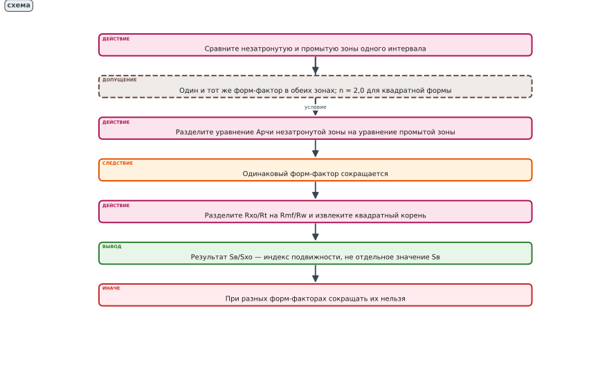
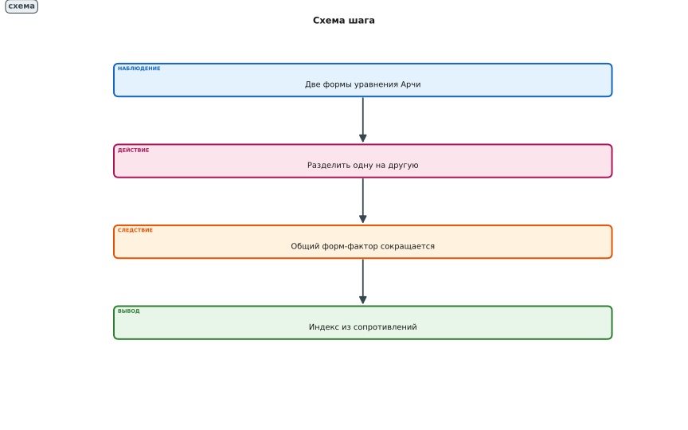

Иногда кривой пористости нет. Метод отношений всё равно позволяет оценить подвижность.
Это возможно, если для двух зон принят одинаковый множитель породы.
Пороговая идея. Общий множитель сокращается, и сравнение возможно без кривой пористости. модель
Интерактив: как это происходит

1 / 3
Поставить рядом две зоны и вопрос о сравнении без пористости.
Допущения: Рассматривается условие общего форм-фактора и книжное значение n = 2,0; условных сопротивлений не вводим..
Как это работает
Механизм
Сопоставьте водонасыщенности промытой и незатронутой зон. Для этого автор делит уравнение Арчи для незатронутой зоны на уравнение для промытой. Форм-фактор — коэффициент a, делённый на пористость в степени m. Одинаковый форм-фактор сокращается при делении. стр. 127
«The ratio method identifies hydrocarbons from the difference between water saturations in the flushed zone ($S_{xo}$) and the uninvaded zone ($S_w$).»
«When the uninvaded zone form of Archie's equation (Equation 7.1) is divided by the flushed zone form (Equation 7.2), the following results:»
«When $S_w$ is divided by $S_{xo}$, the formation factor ($F = a/\phi^m$) is cancelled out of the equation because the same formation factor is used to calculate both $S_w$ and $S_{xo}$.»

Схема связывает исходный признак с проверкой и выводом.
Класс B · схема · нарисовано кодом · стр. 127
Практика
Индекс подвижности — отношение водонасыщенности незатронутой зоны к водонасыщенности промытой. Сначала разделите мелкое сопротивление на истинное. Нормируйте результат на отношение сопротивлений фильтрата и пластовой воды. При принятом автором n = 2,0 извлеките квадратный корень. По сопротивлениям можно также получить оценку воды без кривой пористости. стр. 127
«This can be very helpful in log analysis because, from the ratio $(R_{xo}/R_t)/(R_{mf}/R_w)$, the geologist can determine a value for both the moveable hydrocarbon index ($S_w/S_{xo}$) and water saturation by the ratio method without knowing porosity.»
«The cementation exponent ($n$) is assumed to be 2.0»
Обозначения
В данном фрагменте n назван по-разному. Сверяйте букву с уравнениями для двух зон. пояснение модели
По шагам
Что сделать
Разделите мелкое сопротивление на истинное. стр. 127
Разделите это отношение на отношение сопротивлений фильтрата и воды. стр. 127
Извлеките квадратный корень при указанном допущении. стр. 127
Цифры и условия
В авторской записи показатель n принят равным 2,0. стр. 127
Индекс подвижности через измеренные сопротивления стр. 127
Обозначения
Обозначение
Что это
Единицы
$S_w/S_{xo}$
индекс подвижности углеводородов
—
$R_{xo}$
сопротивление промытой зоны по мелким измерениям
—
$R_t$
истинное сопротивление пласта
—
$R_{mf}$
сопротивление фильтрата при пластовой температуре
—
$R_w$
сопротивление пластовой воды при пластовой температуре
—
Что это значит для данных по книге
Четыре сопротивления для двух зон и их жидкостей → Индекс подвижности без каротажа пористости.
Вход
Четыре сопротивления для двух зон и их жидкостей
Выход
Индекс подвижности без каротажа пористости
Где ломается
Если форм-факторы для двух частей различаются
Где здесь ручной труд специалиста
Входные данные
Четыре сопротивления для двух зон и их жидкостей
Ручные шаги
Образуйте отношение мелкого сопротивления к истинному, нормируйте на отношение сопротивлений фильтрата и пластовой воды, затем получите индекс подвижности.
Точки суждения
Насколько сопоставимы две зоны и сопротивления жидкостей
Время
Зависит от полноты входных данных и числа проверок; глава не даёт оценки времени.
Типичные ошибки
Убрать из расчёта не только пористость, но и необходимые сопротивления
Аналогия модель
Взять отношение двух показаний, чтобы сократился общий коэффициент калибровки.
Где аналогия перестаёт работать: Сокращение не убирает несоответствие глубинности измерений.
Глубже
Одна буква — два названия в тексте модель
В перечнях переменных Арчи n назван показателем насыщения, а в абзаце о методе отношений — показателем цементации. В формулах сохранено обозначение автора; не принимайте различие в названии за новую переменную.
Новые понятия
Промытая зона (flushed zone)
Прилегающая к стволу часть пласта, изменённая фильтратом раствора. модель
Незатронутая зона (uninvaded zone)
Часть пласта, куда не проник фильтрат бурового раствора. модель
Водонасыщенность (water saturation)
Доля порового пространства, заполненная водой. модель
Индекс подвижности (moveable hydrocarbon index)
Отношение водонасыщенности незатронутой зоны к водонасыщенности промытой зоны. стр. 127
Истинное сопротивление пласта (true formation resistivity)
Значение по глубинному индукционному или глубинному боковому каротажу после поправки на проникновение. стр. 126
Мелкое сопротивление (shallow resistivity)
Сопротивление, измеренное прибором, исследующим область непосредственно у ствола. стр. 127
Фильтрат раствора (mud filtrate)
Жидкая часть бурового раствора, проникающая в пласт. модель
Форм-фактор (formation factor)
Общий для обеих частей пласта множитель a, делённый на пористость в степени m. стр. 127
Проверь себя
Порядок
В каком порядке считают индекс по четырём сопротивлениям?
Перетащите пункты (мышью или пальцем за ⠿) или двигайте кнопками ↑ ↓.
⠿Нормировать на отношение сопротивлений жидкостей
⠿Извлечь квадратный корень
⠿Разделить мелкое сопротивление на истинное
Верный ответ: Разделить мелкое сопротивление на истинное → Нормировать на отношение сопротивлений жидкостей → Извлечь квадратный корень
Все утверждения шага с дословной цитатой автора и страницей книги (по PDF).
Метод отношений выделяет углеводороды по разности водонасыщенностей промытой и незатронутой зон. наблюдение
«The ratio method identifies hydrocarbons from the difference between water saturations in the flushed zone ($S_{xo}$) and the uninvaded zone ($S_w$).»
Формулу отношения получают делением уравнения для незатронутой зоны на уравнение для промытой зоны. наблюдение
«When the uninvaded zone form of Archie's equation (Equation 7.1) is divided by the flushed zone form (Equation 7.2), the following results:»
Одинаковый форм-фактор сокращается при делении насыщенностей. наблюдение
«When $S_w$ is divided by $S_{xo}$, the formation factor ($F = a/\phi^m$) is cancelled out of the equation because the same formation factor is used to calculate both $S_w$ and $S_{xo}$.»
По отношениям сопротивлений можно оценить индекс подвижности и водонасыщенность без каротажа пористости. наблюдение
«This can be very helpful in log analysis because, from the ratio $(R_{xo}/R_t)/(R_{mf}/R_w)$, the geologist can determine a value for both the moveable hydrocarbon index ($S_w/S_{xo}$) and water saturation by the ratio method without knowing porosity.»
В этом месте автор принимает показатель n равным 2.0. допущение
«The cementation exponent ($n$) is assumed to be 2.0»
Исходный текст урока
Стр. 127 · Ratio Method
The ratio method identifies hydrocarbons from the difference between water saturations in the flushed zone ($S_{xo}$) and the uninvaded zone ($S_w$). When the uninvaded zone form of Archie's equation (Equation 7.1) is divided by the flushed zone form (Equation 7.2), the following results:
$R_{xo} =$ formation's shallow resistivity from a measurement such as laterolog-8, microspherically focused log, or microlaterolog
Стр. 127 · Ratio Method
$R_t =$ true formation resistivity (i.e., deep induction or deep laterolog corrected for invasion)
Стр. 127 · Ratio Method
$R_{mf} =$ resistivity of the mud filtrate at formation temperature
Стр. 127 · Ratio Method
$R_w =$ resistivity of formation water at formation temperature
Стр. 127 · Ratio Method
When $S_w$ is divided by $S_{xo}$, the formation factor ($F = a/\phi^m$) is cancelled out of the equation because the same formation factor is used to calculate both $S_w$ and $S_{xo}$. This can be very helpful in log analysis because, from the ratio $(R_{xo}/R_t)/(R_{mf}/R_w)$, the geologist can determine a value for both the moveable hydrocarbon index ($S_w/S_{xo}$) and water saturation by the ratio method without knowing porosity. Therefore, a geologist can still derive useful formation evaluation log parameters even though porosity logs are unavailable.
Стр. 127 · Ratio Method
The moveable hydrocarbon index by the ratio method is: